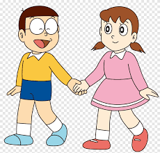

Shizuka is a young girl with fair skin, black hair (brown in the 1973 and 1979 anime) with pigtails. She often wears a long-sleeved dress, and has two socks cover her feet, orange shoes. The 1973 and 1979 versions of the dress are pink with a white stripe close to the skirt's hem.
Shizuka Minamoto also known by her nickname Sue in the American and UK versions, is the tritagonist of the Doraemon franchise, being the only main female character.
In the future after marrying Nobita, she is also known as Shizuka Nobi or Mrs. Nobi.Shizuka is a smart and kind neighbourhood girl. She is, unlike Nobita, a quick-witted and very studious child. Shizuka loves to bathe and does it several times a day passionately. Unlike Nobita, Suneo, and Gian, she is not a fan of video games for the most part.